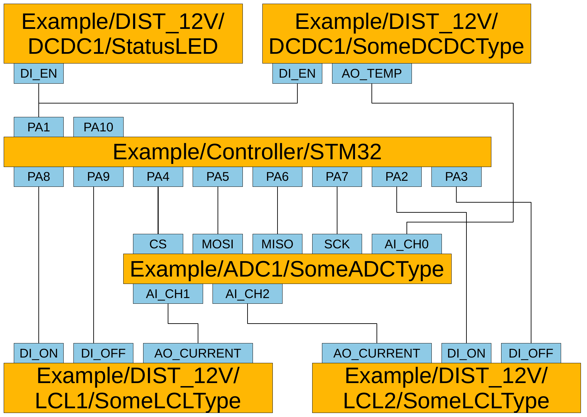
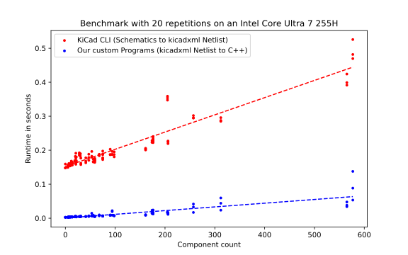

Automating Firmware Generation from Schematics for
Microcontroller based Designs
PLUTO's PCDU (Power Conditioning and Distribution Unit)

A Snippet

A Group Netlist

kicad_firmware_generation
github.com/DLR-RY/kicad_firmware_generation
Systematic Fault Injection
- Inject faults into PCDU schematics:
swap labels, delete cables
- 8885 unique faults
- Result: detected up to 75% of otherwise not found Group Pin swaps
Synthetic Benchmark

Group Netlist